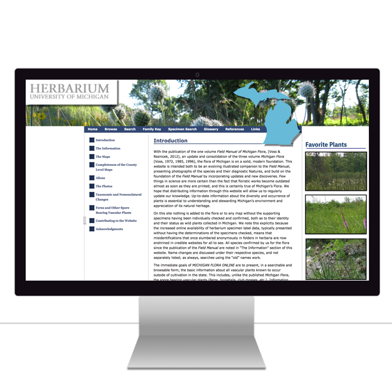
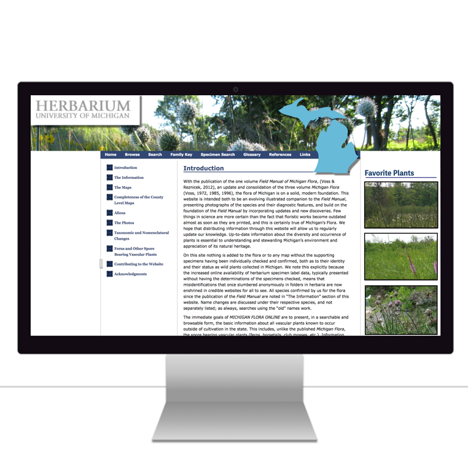

Michigan Flora Website
 

 Summary
Summary
Michigan Flora Website is the one of the largest repository containing information about plants in the state of Michigan The outcome of the project was as follows:
- Provided an impactful recommendation by coming up with the best migration path for the website by keeping the requirements given by the client in the picture
- Conducted Stakeholder and User interviews to dig deeper into the problem
- Performed thourough market research to know about existing websites and the best practice to be inherited by this website
- Designed Prototypes using Sketch of the new design of the website along with the features requested by the client which would enhance the experience of the non-tech savvy users
Check out the Final consulting report and Final presentation
 Problem
Problem
Michigan FLora Website is home to thousands of plants but the website is very difficult to operate for non-tech savvy users. The website has a lot of secuirty issues and is not responsive. There are a lot of features in the website which need enhancement to cope up with today's world. The website is widely used which is why needs migration to address all the requirements of the user.
 Team
Team
Individual
 Design Process
Design Process
 Takeaway
Takeaway
It was a great experience working on redesigning this website. The clients were so happy by my recommendations that they have decided to go ahead with my recommendation. Currently, the clients are hiring developers to implement the recommendtion given by me and the entire migration would be completed in around 3 months.